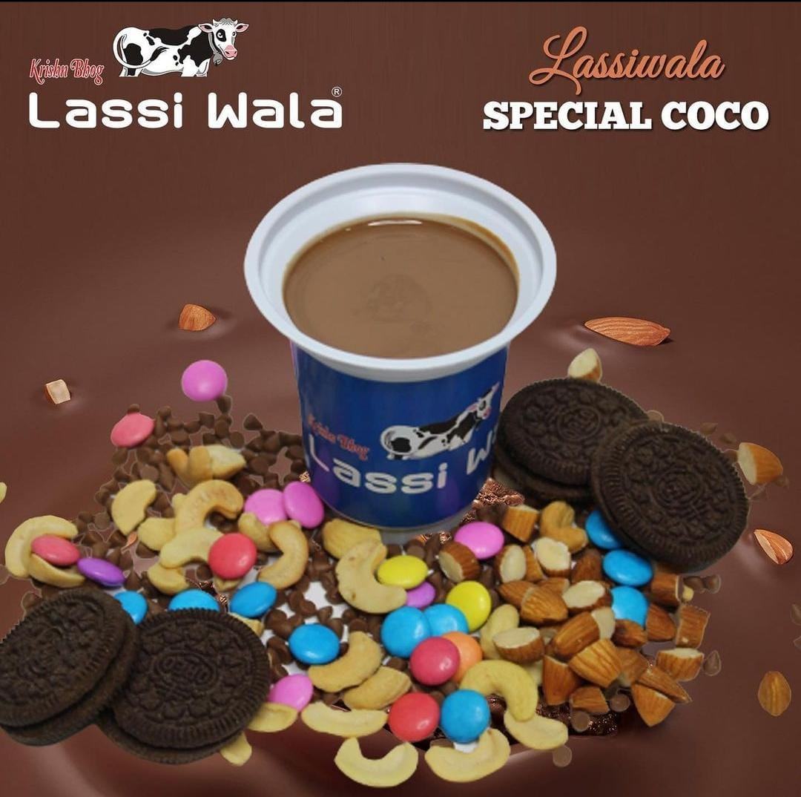

Krishnbhog Lassiwala
Cold Coco

Description :
Hey Foodies,
Summer Season is on its way and what better way to beat the heat by making this creamy, smooth and chilled Cold Coco. It’s widely famous in Surat and Gujrat and it’s a delight especially for young ones. A cool Chocolate drink would create wonders for a child and grown-ups as well.
Ingridients :
- Toned Mil
- Sugar
- Dark Chocolate
- Corn Flour
- Cocoa Powder
- Fresh Cream
Steps :
- Take the toned Milk and heat it.
- Add Sugar and stir it to let the sugar melt.
- Similarly Add Dark Chocolate.
- Add Corn Flour.
- Add Cocoa Powder.
- Stop heating the Milk and after that add cream top it.
- Mix it well and refrigerate it.
- Enjoy the cold coco and feel the richness.